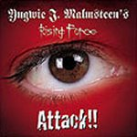

|
|
||
Yngwie J. Malmsteen's Rising Force : Attack!! (2002) |
|

http://www.yngwie.org |
1. Razor Eater 3:27 |
7/10 |
|
Attack!! es el nuevo álbum de Yngwie Malmsteen, uno de los mejores y más conocidos guitarristas de rock del mundo. El inconfundible, aunque ya demasiado trillado, estilo neoclásico de Malmsteen llena este disco desde el principio hasta el final: incontables y vertiginosos paseos sobre sus escalas favoritas, riffs algo simples y repetitivos y mucho más énfasis en tocar la guitarra que en hacer buenas canciones, con la melodía siempre en un segundo plano tras las demostraciones de virtuosismo con el instrumento. Yngwie Malmsteen se ha encargado de casi todo en el disco, incluyendo la composición, las letras, tocar todos los instrumentos, salvo la batería y algunos teclados, e incluso canta una canción (participa en los coros en las otras). Aparte de esto, la producción y los arreglos también son cosa suya. Y sobre la producción comentaré que es demasiado cruda, un poco al estilo de los años ochenta, con una batería que suena demasiado a lata, y la guitarra demasiado presente. El disco en si es razonablemente variado, aunque siempre dentro del estilo de Yngwie. Contiene algunos temas más potentes como "Rise Up", "Ship of Fools", una de mis favoritas, con una intro neoclásica más que previsible, pero con una línea melódica interesante y un trabajo en la voz de Dougie White bastante bueno, "Attack!", cuya mejor parte es la intro o "Iron Clad". Luego están los temas de tempo moderado y aire más clásico, como "Razor Eater", "Stronghold", "Valhalla", una canción con una atmósfera más épica que las otras, y que quizás es la mejor del disco, o "Touch the Sky". Mención aparte merecen las instrumentales: "Baroque & Roll" es un tema instrumental neoclásico a la altura de cualquiera de los mejores que haya podido escribir Yngwie, pero eso sí, nada original; "Majestic Blue", más lento y más alejado del neoclasicismo y "Air" es una variación de un tema de J.S. Bach, o sea que más neoclásico. No puedo dejar de mencionar el hecho de que en "Freedom isn't Free" el que canta es el propio Yngwie, y que podremos vivir si en el futuro no lo vuelve a hacer... Attack!! es un disco que gustará a los incondicionales de Malmsteen, que son muchos, y que odiarán sus detractores, que también son muchos. Si no eres ni de los unos ni de los otros, éste no es el mejor disco de Yngwie pero puede servir perfectamente para conocerle y ayudarte a decantarte por uno u otro lado. |
||
Rubén Béjar |
||